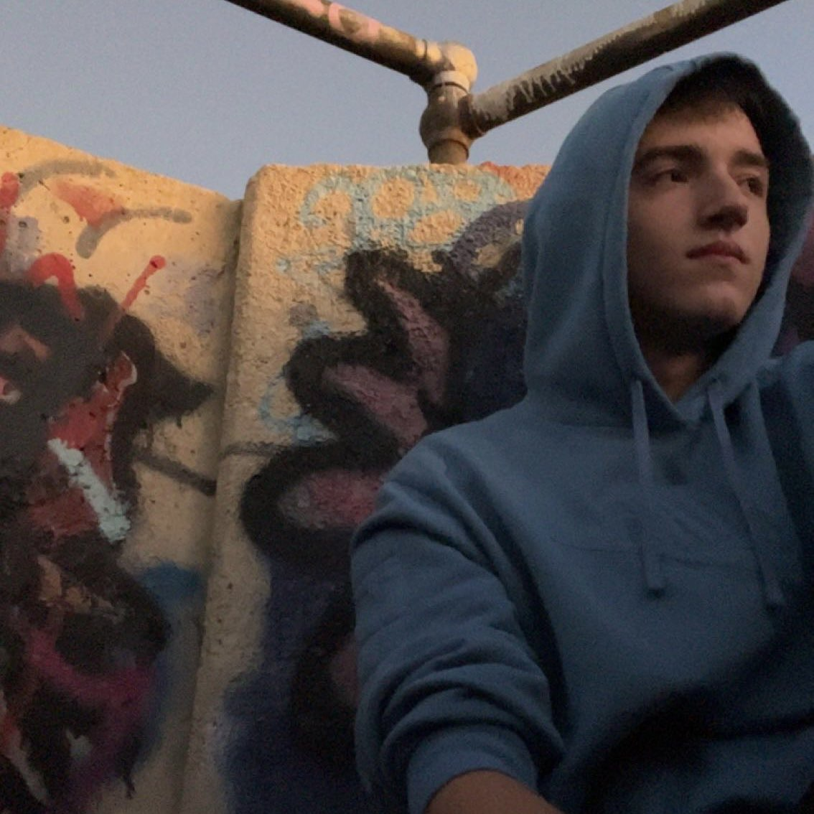

Greetings! I'm excited to share a glimpse into who I am as a self-taught coder hailing from the vibrant state of Massachusetts. My passion for coding ignited a remarkable journey of self-improvement and exploration, fueled by an insatiable curiosity for all things programming. While currently pursuing a degree in Computer Science, I am constantly seeking new and innovative ways to expand my repertoire of coding languages.
As a coder, I find great joy in unraveling complex challenges and crafting elegant solutions. My dedication to the craft has led me to invest countless hours in experimentation, troubleshooting, and collaborative efforts. Alongside my formal education, I actively seek out diverse resources such as online tutorials, coding communities, workshops, and hackathons. This multifaceted approach empowers me to continuously push the boundaries of my abilities and stay at the forefront of the ever-evolving technological landscape.
Beyond the realm of coding, I embrace a well-rounded lifestyle that fuels my creativity and fuels my growth. Literature holds a special place in my heart, and I relish the opportunity to explore a diverse range of fiction and non-fiction works. This enriches my understanding of the world and provides fresh perspectives that inform my coding projects. Additionally, I find solace in the great outdoors. Whether it's embarking on exhilarating hikes or pedaling through scenic cycling routes, immersing myself in nature allows me to recharge and find balance in the digital realm. In this exciting chapter of my life, I eagerly look forward to connecting with fellow coding enthusiasts, professionals, and mentors who share my ardor for growth and innovation. Collaboration and the exchange of ideas are vital components of my personal and professional development. Together, we can create a supportive and inclusive community that fosters creativity, knowledge sharing, and meaningful advancements in the ever-evolving field of technology.
